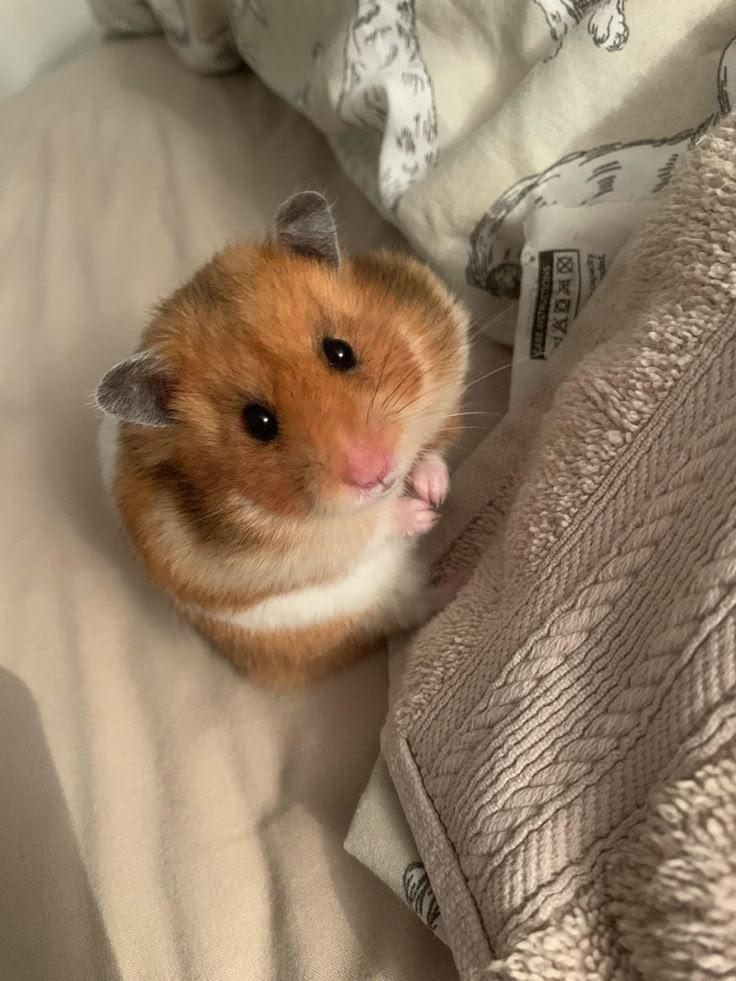
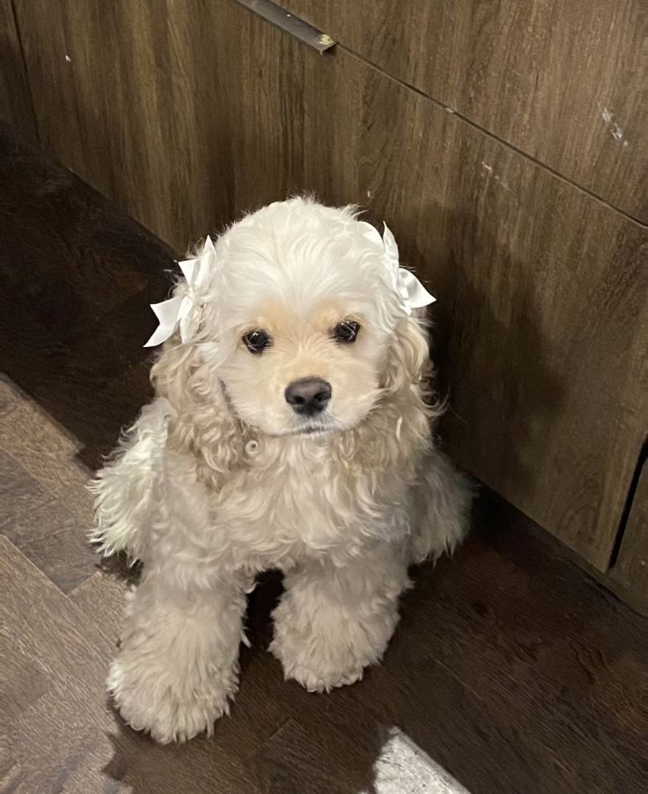

EVAN
Edad: 6 meses
Tamaño: Pequeño
Raza: Hámster sirio
Estado: Disponible

MANON
Edad: 1 año
Tamaño: Mediano
Raza: Conejo doméstico
Estado: Adoptado

MARK
Edad: 8 meses
Tamaño: Mediano
Raza: Gato mestizo
Estado: Disponible

DANIELLE
Edad: 2 años
Tamaño: Medio-grande
Raza: Poodle
Estado: Adoptado

GARAM
Edad: 1 año
Tamaño: Mediano
Raza: Pomerania
Estado: Disponible

SOOJIN
Edad: 7 meses
Tamaño: Medio-Pequeño
Raza: Gato siamés
Estado: Disponible

MANGO
Edad: 1 año
Tamaño: Pequeño
Raza: Ave Agapornis
Estado: Disponible

PIOLIN
Edad: 9 meses
Tamaño: Pequeño
Raza: Ave Perico
Estado: Adoptado

VIVI
Edad: 5 meses
Tamaño: Pequeño
Raza: Hámster
Estado: Disponible